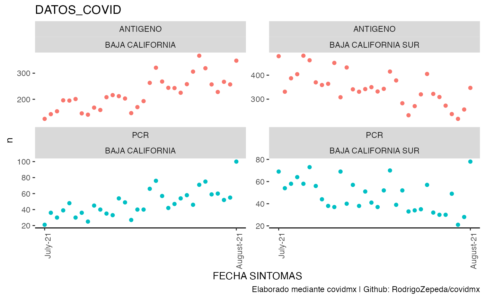
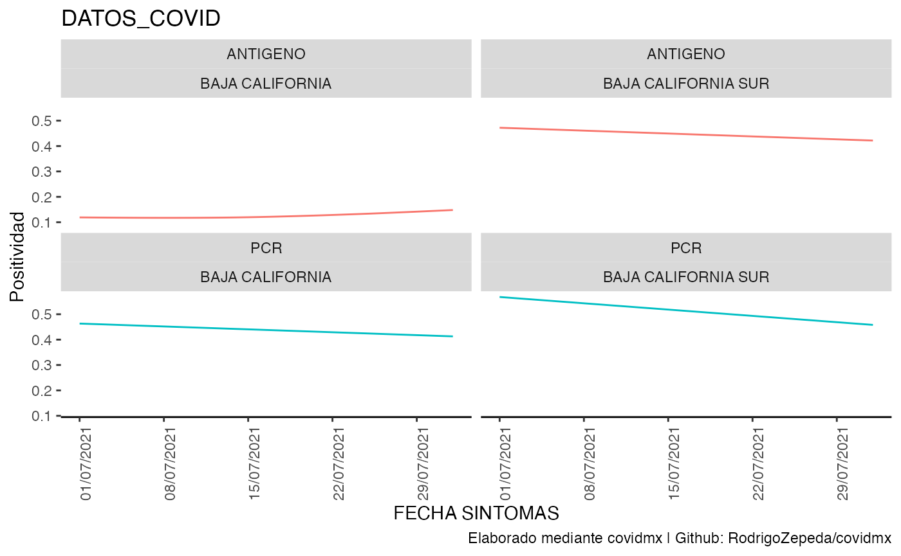
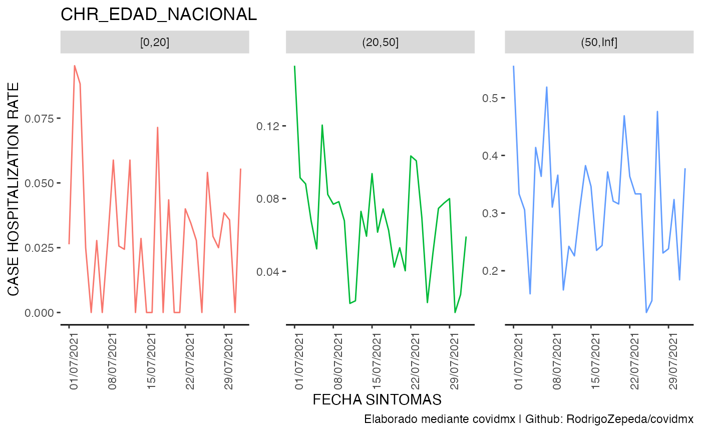
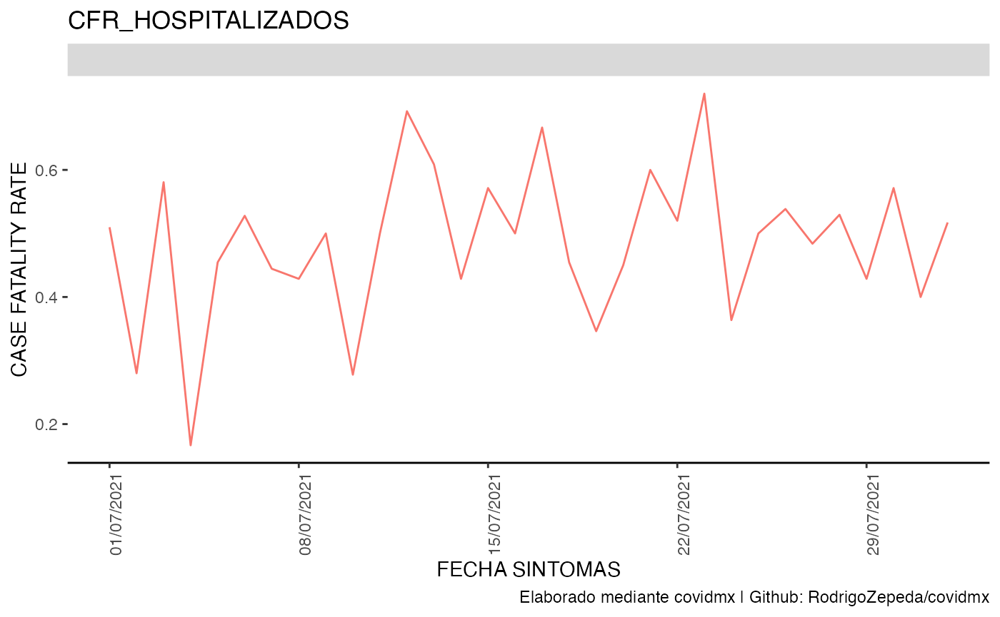
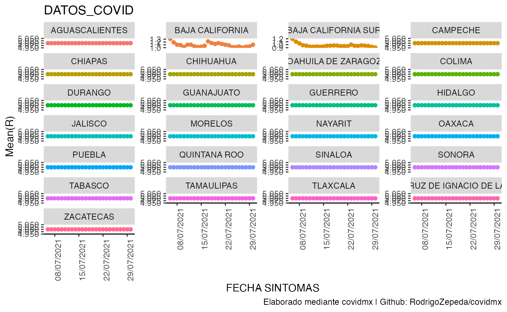
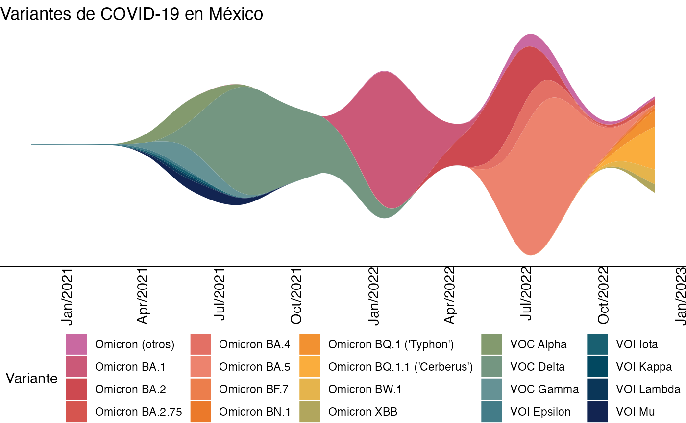
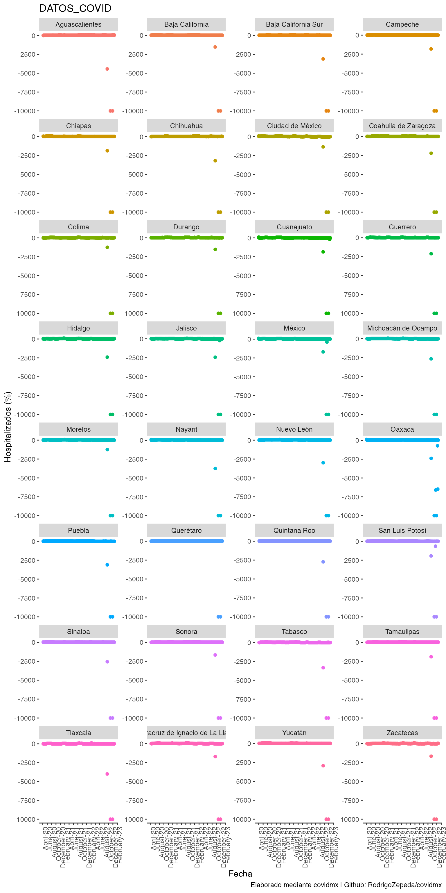
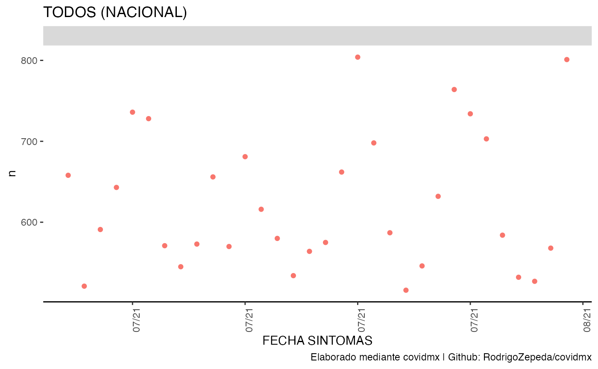
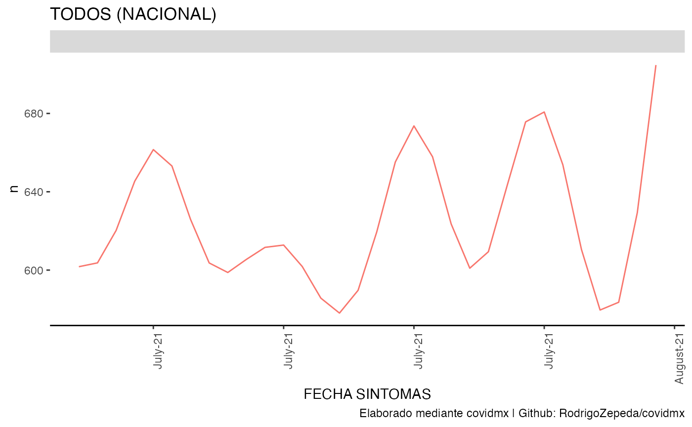
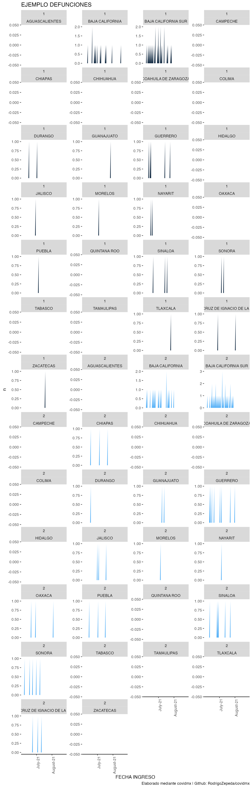

La librería de covidmx está para ayudarte a analizar los
datos abiertos de COVID-19 de México, generar estadísticos de interés y
visualizaciones rápidas. La idea es ahorrarte tiempo.
Instalación
#install.packages("remotes")
remotes::install_github("RodrigoZepeda/covidmx")No olvides llamar la librería y ¡a codear!
NOTA (datos precargados) Si lo que quieres hacer es ponerte a jugar con las funciones del paquete directamente puedes saltar hasta la sección de casos y usar los datos precargados:
datos_covid <- covidmx::datosabiertos #Uso de los datos precargadosDatos Abiertos de la Dirección General de Epidemiología
Descarga automática de base de datos abiertos
Lo más importante es comenzar descargando la base de datos abiertos. Esto lo puedes hacer como sigue:
datos_covid <- descarga_datos_abiertos()Para propósito de este tutorial trabajaremos con una base de datos
más pequeña disponible en el repositorio de Github la cual
guardaremos en duckdb bajo el nombre de
tutorial.
#Cómo vas a guardar tu base .duckdb
base_duck <- "mi_archivo.duckdb"
dlink <- c("tutorial" =
"https://github.com/RodrigoZepeda/covidmx/raw/main/datos_abiertos_covid19.zip")
datos_covid <- descarga_datos_abiertos(sites.covid = dlink, tblname = "tutorial",
dbdir = base_duck) La descarga contiene una conexión a duckdb dentro de
datos_covid$dats la cual puedes operar con dbplyr.
NO se agregan las etiquetas a los datos pues es muy tardado hacerlo:
datos_covid$dats |> dplyr::glimpse()
#> Rows: ??
#> Columns: 40
#> Database: DuckDB 0.3.5-dev1410 [root@Darwin 21.5.0:R 4.2.0//var/folders/42/2kdf45dd1qz5n7kf9lm8ld9r0000gn/T//Rtmp3x4EDm/file135581140e758.duckdb]
#> $ FECHA_ACTUALIZACION <dttm> 2022-07-14, 2022-07-14, 2022-07-14, 2022-07-14,…
#> $ ID_REGISTRO <chr> "78ce0b", "526821", "4ab051", "ba3171", "b970bb"…
#> $ ORIGEN <int> 2, 1, 1, 1, 1, 2, 1, 2, 1, 1, 1, 2, 1, 1, 2, 2, …
#> $ SECTOR <int> 12, 4, 4, 4, 6, 4, 4, 4, 4, 4, 4, 4, 4, 4, 4, 4,…
#> $ ENTIDAD_UM <chr> "03", "03", "03", "03", "03", "03", "03", "03", …
#> $ SEXO <int> 1, 2, 2, 2, 2, 2, 2, 1, 1, 1, 1, 1, 1, 1, 1, 1, …
#> $ ENTIDAD_NAC <chr> "09", "03", "25", "03", "03", "25", "03", "17", …
#> $ ENTIDAD_RES <chr> "03", "03", "03", "03", "03", "03", "03", "03", …
#> $ MUNICIPIO_RES <chr> "003", "008", "008", "008", "003", "003", "008",…
#> $ TIPO_PACIENTE <int> 1, 1, 1, 1, 1, 1, 1, 1, 1, 1, 1, 2, 1, 1, 1, 1, …
#> $ FECHA_INGRESO <dttm> 2021-07-08, 2021-07-01, 2021-07-01, 2021-07-01,…
#> $ FECHA_SINTOMAS <dttm> 2021-07-04, 2021-07-01, 2021-07-01, 2021-07-01,…
#> $ FECHA_DEF <dttm> NA, NA, NA, NA, NA, NA, NA, NA, NA, NA, NA, NA,…
#> $ INTUBADO <int> 97, 97, 97, 97, 97, 97, 97, 97, 97, 97, 97, 2, 9…
#> $ NEUMONIA <int> 2, 2, 2, 2, 2, 2, 2, 2, 2, 2, 2, 1, 2, 2, 2, 2, …
#> $ EDAD <int> 17, 28, 30, 22, 32, 35, 24, 40, 21, 78, 13, 54, …
#> $ NACIONALIDAD <int> 1, 1, 1, 1, 1, 1, 1, 1, 1, 1, 1, 1, 1, 1, 1, 1, …
#> $ EMBARAZO <int> 2, 97, 97, 97, 97, 97, 97, 2, 2, 2, 2, 2, 2, 2, …
#> $ HABLA_LENGUA_INDIG <int> 99, 2, 2, 2, 2, 2, 2, 2, 2, 2, 2, 2, 2, 2, 2, 2,…
#> $ INDIGENA <int> 99, 2, 2, 2, 2, 2, 2, 2, 2, 2, 2, 2, 2, 2, 2, 2,…
#> $ DIABETES <int> 2, 2, 2, 2, 2, 2, 2, 2, 2, 2, 2, 1, 2, 2, 2, 2, …
#> $ EPOC <int> 2, 2, 2, 1, 2, 2, 2, 2, 2, 2, 2, 2, 2, 2, 2, 2, …
#> $ ASMA <int> 2, 2, 2, 2, 2, 2, 2, 2, 2, 2, 2, 2, 2, 2, 2, 2, …
#> $ INMUSUPR <int> 2, 2, 2, 2, 2, 2, 2, 2, 2, 2, 2, 2, 2, 2, 2, 2, …
#> $ HIPERTENSION <int> 2, 2, 2, 2, 2, 2, 2, 2, 2, 2, 2, 2, 2, 2, 2, 2, …
#> $ OTRA_COM <int> 2, 2, 2, 2, 2, 2, 2, 2, 2, 2, 2, 2, 2, 2, 2, 2, …
#> $ CARDIOVASCULAR <int> 2, 2, 2, 2, 2, 2, 2, 2, 2, 2, 2, 2, 2, 2, 2, 2, …
#> $ OBESIDAD <int> 2, 1, 1, 2, 2, 1, 2, 2, 2, 2, 2, 2, 2, 2, 2, 2, …
#> $ RENAL_CRONICA <int> 2, 2, 2, 2, 2, 2, 2, 2, 2, 2, 2, 2, 2, 2, 2, 2, …
#> $ TABAQUISMO <int> 2, 2, 2, 1, 2, 2, 2, 2, 2, 2, 2, 2, 2, 2, 2, 2, …
#> $ OTRO_CASO <int> 2, 1, 1, 1, 2, 2, 2, 2, 2, 2, 2, 2, 2, 2, 2, 2, …
#> $ TOMA_MUESTRA_LAB <int> 1, 2, 2, 2, 2, 1, 2, 2, 2, 2, 2, 1, 2, 2, 2, 2, …
#> $ RESULTADO_LAB <int> 2, 97, 97, 97, 97, 1, 97, 97, 97, 97, 97, 4, 97,…
#> $ TOMA_MUESTRA_ANTIGENO <int> 1, 1, 1, 1, 1, 1, 1, 1, 1, 1, 1, 1, 1, 1, 1, 1, …
#> $ RESULTADO_ANTIGENO <int> 2, 2, 1, 2, 2, 1, 1, 1, 2, 2, 1, 2, 2, 2, 2, 2, …
#> $ CLASIFICACION_FINAL <int> 7, 7, 3, 7, 7, 3, 3, 3, 7, 7, 3, 6, 7, 7, 7, 7, …
#> $ MIGRANTE <int> 99, 99, 99, 99, 99, 99, 99, 99, 99, 99, 99, 99, …
#> $ PAIS_NACIONALIDAD <chr> "México", "México", "México", "México", "México"…
#> $ PAIS_ORIGEN <chr> "97", "97", "97", "97", "97", "97", "97", "97", …
#> $ UCI <int> 97, 97, 97, 97, 97, 97, 97, 97, 97, 97, 97, 2, 9…Sin embargo el diccionario se almacena como una lista en
dict para su consulta y uso por las funciones internas:
datos_covid$dict |> dplyr::glimpse()
#> List of 31
#> $ ORIGEN : tibble [3 × 2] (S3: tbl_df/tbl/data.frame)
#> ..$ CLAVE : num [1:3] 1 2 99
#> ..$ DESCRIPCIÓN: chr [1:3] "USMER" "FUERA DE USMER" "NO ESPECIFICADO"
#> $ SECTOR : tibble [14 × 2] (S3: tbl_df/tbl/data.frame)
#> ..$ CLAVE : num [1:14] 1 2 3 4 5 6 7 8 9 10 ...
#> ..$ DESCRIPCIÓN: chr [1:14] "CRUZ ROJA" "DIF" "ESTATAL" "IMSS" ...
#> $ SEXO : tibble [3 × 2] (S3: tbl_df/tbl/data.frame)
#> ..$ CLAVE : num [1:3] 1 2 99
#> ..$ DESCRIPCIÓN: chr [1:3] "MUJER" "HOMBRE" "NO ESPECIFICADO"
#> $ PACIENTE : tibble [3 × 2] (S3: tbl_df/tbl/data.frame)
#> ..$ CLAVE : num [1:3] 1 2 99
#> ..$ DESCRIPCIÓN: chr [1:3] "AMBULATORIO" "HOSPITALIZADO" "NO ESPECIFICADO"
#> $ NACIONALIDAD : tibble [3 × 2] (S3: tbl_df/tbl/data.frame)
#> ..$ CLAVE : num [1:3] 1 2 99
#> ..$ DESCRIPCIÓN: chr [1:3] "MEXICANA" "EXTRANJERA" "NO ESPECIFICADO"
#> $ RESULTADO_LAB : tibble [5 × 2] (S3: tbl_df/tbl/data.frame)
#> ..$ CLAVE : num [1:5] 1 2 3 4 97
#> ..$ DESCRIPCIÓN: chr [1:5] "POSITIVO A SARS-COV-2" "NO POSITIVO A SARS-COV-2" "RESULTADO PENDIENTE" "RESULTADO NO ADECUADO" ...
#> $ RESULTADO_ANTIGENO : tibble [3 × 2] (S3: tbl_df/tbl/data.frame)
#> ..$ CLAVE : num [1:3] 1 2 97
#> ..$ DESCRIPCIÓN: chr [1:3] "POSITIVO A SARS-COV-2" "NEGATIVO A SARS-COV-2" "NO APLICA (CASO SIN MUESTRA)"
#> $ CLASIFICACION_FINAL : tibble [7 × 3] (S3: tbl_df/tbl/data.frame)
#> ..$ CLAVE : num [1:7] 1 2 3 4 5 6 7
#> ..$ CLASIFICACIÓN: chr [1:7] "CASO DE COVID-19 CONFIRMADO POR ASOCIACIÓN CLÍNICA EPIDEMIOLÓGICA" "CASO DE COVID-19 CONFIRMADO POR COMITÉ DE DICTAMINACIÓN" "CASO DE SARS-COV-2 CONFIRMADO" "INVÁLIDO POR LABORATORIO" ...
#> ..$ DESCRIPCIÓN : chr [1:7] "Confirmado por asociación aplica cuando el caso informó ser contacto de un positivo a COVID-19 (y este se encue"| __truncated__ "Confirmado por dictaminación solo aplica para defunciones bajo las siguientes condiciones: \r\nAl caso no se le"| __truncated__ "Confirmado aplica cuando:\r\nEl caso tiene muestra de laboratorio o prueba antigénica y resultó positiva a SAR"| __truncated__ "Inválido aplica cuando el caso no tienen asociación clínico epidemiológica, ni dictaminación a COVID-19. Se le "| __truncated__ ...
#> $ MUNICIPIO_RES : tibble [2,501 × 3] (S3: tbl_df/tbl/data.frame)
#> ..$ CLAVE_MUNICIPIO: chr [1:2501] "001" "002" "003" "004" ...
#> ..$ MUNICIPIO : chr [1:2501] "AGUASCALIENTES" "ASIENTOS" "CALVILLO" "COSÍO" ...
#> ..$ CLAVE_ENTIDAD : chr [1:2501] "01" "01" "01" "01" ...
#> $ INTUBADO : tibble [5 × 2] (S3: tbl_df/tbl/data.frame)
#> ..$ CLAVE : num [1:5] 1 2 97 98 99
#> ..$ DESCRIPCIÓN: chr [1:5] "SI" "NO" "NO APLICA" "SE IGNORA" ...
#> $ NEUMONIA : tibble [5 × 2] (S3: tbl_df/tbl/data.frame)
#> ..$ CLAVE : num [1:5] 1 2 97 98 99
#> ..$ DESCRIPCIÓN: chr [1:5] "SI" "NO" "NO APLICA" "SE IGNORA" ...
#> $ EMBARAZO : tibble [5 × 2] (S3: tbl_df/tbl/data.frame)
#> ..$ CLAVE : num [1:5] 1 2 97 98 99
#> ..$ DESCRIPCIÓN: chr [1:5] "SI" "NO" "NO APLICA" "SE IGNORA" ...
#> $ HABLA LENGUA INDIGENA: tibble [5 × 2] (S3: tbl_df/tbl/data.frame)
#> ..$ CLAVE : num [1:5] 1 2 97 98 99
#> ..$ DESCRIPCIÓN: chr [1:5] "SI" "NO" "NO APLICA" "SE IGNORA" ...
#> $ INDIGENA : tibble [5 × 2] (S3: tbl_df/tbl/data.frame)
#> ..$ CLAVE : num [1:5] 1 2 97 98 99
#> ..$ DESCRIPCIÓN: chr [1:5] "SI" "NO" "NO APLICA" "SE IGNORA" ...
#> $ DIABETES : tibble [5 × 2] (S3: tbl_df/tbl/data.frame)
#> ..$ CLAVE : num [1:5] 1 2 97 98 99
#> ..$ DESCRIPCIÓN: chr [1:5] "SI" "NO" "NO APLICA" "SE IGNORA" ...
#> $ EPOC : tibble [5 × 2] (S3: tbl_df/tbl/data.frame)
#> ..$ CLAVE : num [1:5] 1 2 97 98 99
#> ..$ DESCRIPCIÓN: chr [1:5] "SI" "NO" "NO APLICA" "SE IGNORA" ...
#> $ ASMA : tibble [5 × 2] (S3: tbl_df/tbl/data.frame)
#> ..$ CLAVE : num [1:5] 1 2 97 98 99
#> ..$ DESCRIPCIÓN: chr [1:5] "SI" "NO" "NO APLICA" "SE IGNORA" ...
#> $ INMUSUPR : tibble [5 × 2] (S3: tbl_df/tbl/data.frame)
#> ..$ CLAVE : num [1:5] 1 2 97 98 99
#> ..$ DESCRIPCIÓN: chr [1:5] "SI" "NO" "NO APLICA" "SE IGNORA" ...
#> $ HIPERTENSION : tibble [5 × 2] (S3: tbl_df/tbl/data.frame)
#> ..$ CLAVE : num [1:5] 1 2 97 98 99
#> ..$ DESCRIPCIÓN: chr [1:5] "SI" "NO" "NO APLICA" "SE IGNORA" ...
#> $ CARDIOVASCULAR : tibble [5 × 2] (S3: tbl_df/tbl/data.frame)
#> ..$ CLAVE : num [1:5] 1 2 97 98 99
#> ..$ DESCRIPCIÓN: chr [1:5] "SI" "NO" "NO APLICA" "SE IGNORA" ...
#> $ OTRO_CASO : tibble [5 × 2] (S3: tbl_df/tbl/data.frame)
#> ..$ CLAVE : num [1:5] 1 2 97 98 99
#> ..$ DESCRIPCIÓN: chr [1:5] "SI" "NO" "NO APLICA" "SE IGNORA" ...
#> $ TOMA_MUESTRA_LAB : tibble [5 × 2] (S3: tbl_df/tbl/data.frame)
#> ..$ CLAVE : num [1:5] 1 2 97 98 99
#> ..$ DESCRIPCIÓN: chr [1:5] "SI" "NO" "NO APLICA" "SE IGNORA" ...
#> $ TOMA_MUESTRA_ANTIGENO: tibble [5 × 2] (S3: tbl_df/tbl/data.frame)
#> ..$ CLAVE : num [1:5] 1 2 97 98 99
#> ..$ DESCRIPCIÓN: chr [1:5] "SI" "NO" "NO APLICA" "SE IGNORA" ...
#> $ OTRA_COMORBILIDAD : tibble [5 × 2] (S3: tbl_df/tbl/data.frame)
#> ..$ CLAVE : num [1:5] 1 2 97 98 99
#> ..$ DESCRIPCIÓN: chr [1:5] "SI" "NO" "NO APLICA" "SE IGNORA" ...
#> $ OBESIDAD : tibble [5 × 2] (S3: tbl_df/tbl/data.frame)
#> ..$ CLAVE : num [1:5] 1 2 97 98 99
#> ..$ DESCRIPCIÓN: chr [1:5] "SI" "NO" "NO APLICA" "SE IGNORA" ...
#> $ RENAL_CRONICA : tibble [5 × 2] (S3: tbl_df/tbl/data.frame)
#> ..$ CLAVE : num [1:5] 1 2 97 98 99
#> ..$ DESCRIPCIÓN: chr [1:5] "SI" "NO" "NO APLICA" "SE IGNORA" ...
#> $ TABAQUISMO : tibble [5 × 2] (S3: tbl_df/tbl/data.frame)
#> ..$ CLAVE : num [1:5] 1 2 97 98 99
#> ..$ DESCRIPCIÓN: chr [1:5] "SI" "NO" "NO APLICA" "SE IGNORA" ...
#> $ UCI : tibble [5 × 2] (S3: tbl_df/tbl/data.frame)
#> ..$ CLAVE : num [1:5] 1 2 97 98 99
#> ..$ DESCRIPCIÓN: chr [1:5] "SI" "NO" "NO APLICA" "SE IGNORA" ...
#> $ ENTIDAD_UM : tibble [36 × 3] (S3: tbl_df/tbl/data.frame)
#> ..$ CLAVE_ENTIDAD : chr [1:36] "01" "02" "03" "04" ...
#> ..$ ENTIDAD_FEDERATIVA: chr [1:36] "AGUASCALIENTES" "BAJA CALIFORNIA" "BAJA CALIFORNIA SUR" "CAMPECHE" ...
#> ..$ ABREVIATURA : chr [1:36] "AS" "BC" "BS" "CC" ...
#> $ ENTIDAD_RES : tibble [36 × 3] (S3: tbl_df/tbl/data.frame)
#> ..$ CLAVE_ENTIDAD : chr [1:36] "01" "02" "03" "04" ...
#> ..$ ENTIDAD_FEDERATIVA: chr [1:36] "AGUASCALIENTES" "BAJA CALIFORNIA" "BAJA CALIFORNIA SUR" "CAMPECHE" ...
#> ..$ ABREVIATURA : chr [1:36] "AS" "BC" "BS" "CC" ...
#> $ ENTIDAD_NAC : tibble [36 × 3] (S3: tbl_df/tbl/data.frame)
#> ..$ CLAVE_ENTIDAD : chr [1:36] "01" "02" "03" "04" ...
#> ..$ ENTIDAD_FEDERATIVA: chr [1:36] "AGUASCALIENTES" "BAJA CALIFORNIA" "BAJA CALIFORNIA SUR" "CAMPECHE" ...
#> ..$ ABREVIATURA : chr [1:36] "AS" "BC" "BS" "CC" ...por ejemplo para ver el diccionario de antígeno:
datos_covid$dict$RESULTADO_ANTIGENO
#> # A tibble: 3 × 2
#> CLAVE DESCRIPCIÓN
#> <dbl> <chr>
#> 1 1 POSITIVO A SARS-COV-2
#> 2 2 NEGATIVO A SARS-COV-2
#> 3 97 NO APLICA (CASO SIN MUESTRA)¿Se te fue el Internet? No te preocupes,
descarga_datos_abiertostrabajará con tu descarga más reciente.
Lectura desde duckdb
No es necesario volver a descargar si reinicias tu sesión de
R siempre y cuando los hayas guardado en
duckdb estableciendo un dbdir (de lo contrario
la base de datos sólo dura lo que dure tu sesión de R).
Puedes sólo leer los datos abiertos que ya tienes usando la función
read_datos_abiertos.R;
read_datos_abiertos(base_duck, tblname = "tutorial") |> glimpse()
#> List of 3
#> $ dats :List of 2
#> ..$ src :List of 2
#> .. ..$ con :Formal class 'duckdb_connection' [package "duckdb"] with 5 slots
#> .. ..$ disco: NULL
#> .. ..- attr(*, "class")= chr [1:4] "src_duckdb_connection" "src_dbi" "src_sql" "src"
#> ..$ lazy_query:List of 13
#> .. ..$ x :List of 13
#> .. .. ..- attr(*, "class")= chr [1:2] "lazy_select_query" "lazy_query"
#> .. ..$ select : tibble [40 × 5] (S3: tbl_df/tbl/data.frame)
#> .. ..$ where : NULL
#> .. ..$ group_by : NULL
#> .. ..$ order_by : NULL
#> .. ..$ distinct : logi FALSE
#> .. ..$ limit : NULL
#> .. ..$ select_operation : chr "mutate"
#> .. ..$ last_op : chr "mutate"
#> .. ..$ message_summarise: NULL
#> .. ..$ group_vars : chr(0)
#> .. ..$ order_vars : NULL
#> .. ..$ frame : NULL
#> .. ..- attr(*, "class")= chr [1:2] "lazy_select_query" "lazy_query"
#> ..- attr(*, "class")= chr [1:5] "tbl_duckdb_connection" "tbl_dbi" "tbl_sql" "tbl_lazy" ...
#> $ disconnect:function ()
#> $ dict :List of 31
#> ..$ ORIGEN : tibble [3 × 2] (S3: tbl_df/tbl/data.frame)
#> ..$ SECTOR : tibble [14 × 2] (S3: tbl_df/tbl/data.frame)
#> ..$ SEXO : tibble [3 × 2] (S3: tbl_df/tbl/data.frame)
#> ..$ PACIENTE : tibble [3 × 2] (S3: tbl_df/tbl/data.frame)
#> ..$ NACIONALIDAD : tibble [3 × 2] (S3: tbl_df/tbl/data.frame)
#> ..$ RESULTADO_LAB : tibble [5 × 2] (S3: tbl_df/tbl/data.frame)
#> ..$ RESULTADO_ANTIGENO : tibble [3 × 2] (S3: tbl_df/tbl/data.frame)
#> ..$ CLASIFICACION_FINAL : tibble [7 × 3] (S3: tbl_df/tbl/data.frame)
#> ..$ MUNICIPIO_RES : tibble [2,501 × 3] (S3: tbl_df/tbl/data.frame)
#> ..$ INTUBADO : tibble [5 × 2] (S3: tbl_df/tbl/data.frame)
#> ..$ NEUMONIA : tibble [5 × 2] (S3: tbl_df/tbl/data.frame)
#> ..$ EMBARAZO : tibble [5 × 2] (S3: tbl_df/tbl/data.frame)
#> ..$ HABLA LENGUA INDIGENA: tibble [5 × 2] (S3: tbl_df/tbl/data.frame)
#> ..$ INDIGENA : tibble [5 × 2] (S3: tbl_df/tbl/data.frame)
#> ..$ DIABETES : tibble [5 × 2] (S3: tbl_df/tbl/data.frame)
#> ..$ EPOC : tibble [5 × 2] (S3: tbl_df/tbl/data.frame)
#> ..$ ASMA : tibble [5 × 2] (S3: tbl_df/tbl/data.frame)
#> ..$ INMUSUPR : tibble [5 × 2] (S3: tbl_df/tbl/data.frame)
#> ..$ HIPERTENSION : tibble [5 × 2] (S3: tbl_df/tbl/data.frame)
#> ..$ CARDIOVASCULAR : tibble [5 × 2] (S3: tbl_df/tbl/data.frame)
#> ..$ OTRO_CASO : tibble [5 × 2] (S3: tbl_df/tbl/data.frame)
#> ..$ TOMA_MUESTRA_LAB : tibble [5 × 2] (S3: tbl_df/tbl/data.frame)
#> ..$ TOMA_MUESTRA_ANTIGENO: tibble [5 × 2] (S3: tbl_df/tbl/data.frame)
#> ..$ OTRA_COMORBILIDAD : tibble [5 × 2] (S3: tbl_df/tbl/data.frame)
#> ..$ OBESIDAD : tibble [5 × 2] (S3: tbl_df/tbl/data.frame)
#> ..$ RENAL_CRONICA : tibble [5 × 2] (S3: tbl_df/tbl/data.frame)
#> ..$ TABAQUISMO : tibble [5 × 2] (S3: tbl_df/tbl/data.frame)
#> ..$ UCI : tibble [5 × 2] (S3: tbl_df/tbl/data.frame)
#> ..$ ENTIDAD_UM : tibble [36 × 3] (S3: tbl_df/tbl/data.frame)
#> ..$ ENTIDAD_RES : tibble [36 × 3] (S3: tbl_df/tbl/data.frame)
#> ..$ ENTIDAD_NAC : tibble [36 × 3] (S3: tbl_df/tbl/data.frame)El proceso de descarga de cualquier base de covidmx es
un proceso inteligente. Si no ha pasado más de un día desde que
descargaste la base el programa te advertirá de que no tiene sentido
volver a descargar.
Podemos ver un ejemplo descargando sólo el diccionario (que ya
descargamos arriba con descarga_datos_abiertos)
diccionario_datos <- descarga_diccionario()
#> Warning: La descarga mas reciente de fue hace 0.02222 dias. Como tiene menos de un dia
#> usare esa. Escribe `force_download = TRUE` si quieres descargar de todas
#> formas. Para desactivar este mensaje `show_warnings = FALSE.`Si de todas maneras quieres reintentar la descarga puedes usar
force_download = TRUE
diccionario_datos <- descarga_diccionario(force_download = TRUE)lo cual verificará mediante pins que la base en
línea sea distinta de la que tienes almacenada y en caso afirmativo
descargará los datos.
Lectura de base de datos de zip o csv
Si el proceso de descarga se interrumpe en algún momento puedes leer
los datos abiertos de zip o bien del csv
descomprimido con read_datos_abiertos también:
#Descarga sólo el zip
zip_path <- descarga_db_datos_abiertos_tbl(sites.covid = dlink, show_warnings = F, quiet = T)
datos_covid <- read_datos_abiertos(zip_path, tblname = "tutorial")
#O bien descomprime el zip y lee el csv
csv_path <- unzip_db_datos_abiertos_tbl(zip_path)
datos_covid <- read_datos_abiertos_csv(csv_path, tblname = "tutorial")Lo mismo puedes hacer si tienes el diccionario descargado con las
variables diccionario_zip_path,
diccionario_unzipped_path y diccionario para
cuando el diciconario es un archivo zip, un archivo
xlsx o un tibble en tu sesiòn de
R (respectivamente) como sigue:
#Descarga el diccionario en zip
zip_path <- descarga_db_diccionario_ssa()
datos_covid <- read_datos_abiertos(base_duck, diccionario_zip_path = zip_path, tblname = "tutorial")Una vez descargados (o leídos), basta componer la base de datos con cualquiera de las funciones para tener una tabla de datos agregada por fecha y entidad.
Para terminar de usar los datos, nos desconectamos de la base con:
datos_covid$disconnect()
#> ✔ DesconectadoLectura de la base de datos del tutorial
Para lo que sigue del tutorial usaremos los datos precargados:
datos_covid <- covidmx::datosabiertos #Uso de los datos precargadosCasos (Incidencia)
Las bases de datos se agregan a la lista bajo el nombre default
casos. Por ejemplo:
datos_covid <- datos_covid |> casos()El objeto casos por default es un tibble
con el que ya puedes operar:
datos_covid$casos |> head()
#> # A tibble: 6 × 5
#> FECHA_SINTOMAS ENTIDAD_UM n ENTIDAD_FEDERATIVA ABREVIATURA
#> <date> <chr> <int> <chr> <chr>
#> 1 2021-07-01 02 229 BAJA CALIFORNIA BC
#> 2 2021-07-01 03 794 BAJA CALIFORNIA SUR BS
#> 3 2021-07-02 02 240 BAJA CALIFORNIA BC
#> 4 2021-07-02 03 535 BAJA CALIFORNIA SUR BS
#> 5 2021-07-03 02 269 BAJA CALIFORNIA BC
#> 6 2021-07-03 03 646 BAJA CALIFORNIA SUR BSNota que lo que hace es agregar por fecha y por entidad de la unidad médica los casos.
Se puede filtar por entidad de la unidad médica seleccionando las entidades de interés:
#> # A tibble: 6 × 5
#> FECHA_SINTOMAS ENTIDAD_UM n ENTIDAD_FEDERATIVA ABREVIATURA
#> <date> <chr> <int> <chr> <chr>
#> 1 2021-07-01 02 229 BAJA CALIFORNIA BC
#> 2 2021-07-01 03 794 BAJA CALIFORNIA SUR BS
#> 3 2021-07-02 02 240 BAJA CALIFORNIA BC
#> 4 2021-07-02 03 535 BAJA CALIFORNIA SUR BS
#> 5 2021-07-03 02 269 BAJA CALIFORNIA BC
#> 6 2021-07-03 03 646 BAJA CALIFORNIA SUR BSSi se quiere filtrar por entidad de nacimiento y que la fecha sea la de ingreso, por ejemplo:
datos_covid |>
casos(entidades = "BAJA CALIFORNIA",
entidad_tipo = "Nacimiento",
fecha_tipo = "Ingreso",
list_name = "DB_Filtro_Nac") #> # A tibble: 6 × 5
#> FECHA_INGRESO ENTIDAD_NAC n ENTIDAD_FEDERATIVA ABREVIATURA
#> <date> <chr> <int> <chr> <chr>
#> 1 2021-07-01 02 15 BAJA CALIFORNIA BC
#> 2 2021-07-02 02 55 BAJA CALIFORNIA BC
#> 3 2021-07-03 02 27 BAJA CALIFORNIA BC
#> 4 2021-07-04 02 27 BAJA CALIFORNIA BC
#> 5 2021-07-05 02 224 BAJA CALIFORNIA BC
#> 6 2021-07-06 02 192 BAJA CALIFORNIA BCFinalmente, si sólo se desean casos confirmados e inválidos:
datos_covid |>
casos(entidades = "BAJA CALIFORNIA",
entidad_tipo = "Nacimiento",
fecha_tipo = "Ingreso",
tipo_clasificacion = c("Confirmados COVID", "Invalido"),
list_name = "BC_conf_inv")#> # A tibble: 6 × 5
#> FECHA_INGRESO ENTIDAD_NAC n ENTIDAD_FEDERATIVA ABREVIATURA
#> <date> <chr> <int> <chr> <chr>
#> 1 2021-07-01 02 3 BAJA CALIFORNIA BC
#> 2 2021-07-02 02 7 BAJA CALIFORNIA BC
#> 3 2021-07-03 02 5 BAJA CALIFORNIA BC
#> 4 2021-07-04 02 2 BAJA CALIFORNIA BC
#> 5 2021-07-05 02 35 BAJA CALIFORNIA BC
#> 6 2021-07-06 02 43 BAJA CALIFORNIA BCNota que por default el programa rellena con ceros lo que no se
observó. Si quieres cancelar esta opción basta con cambiar
fill_zeros = FALSE:
datos_covid |>
casos(entidades = c("QUINTANA ROO","AGUASCALIENTES"),
entidad_tipo = "Nacimiento",
fecha_tipo = "Ingreso",
tipo_clasificacion = c("Confirmados COVID", "Invalido"),
list_name = "Sin fill zeros",
fill_zeros = FALSE)#> # A tibble: 6 × 5
#> FECHA_INGRESO ENTIDAD_NAC n ENTIDAD_FEDERATIVA ABREVIATURA
#> <date> <chr> <int> <chr> <chr>
#> 1 2021-07-05 01 1 AGUASCALIENTES AS
#> 2 2021-07-09 23 1 QUINTANA ROO QR
#> 3 2021-07-10 23 1 QUINTANA ROO QR
#> 4 2021-07-11 01 1 AGUASCALIENTES AS
#> 5 2021-07-12 01 1 AGUASCALIENTES AS
#> 6 2021-07-13 01 1 AGUASCALIENTES ASSi se desea que los casos vengan agregados (es decir
QUINTANA ROO + AGUASCALIENTES) se puede cambiar la opción
de group_by_entidad a FALSE:
datos_covid |>
casos(entidades = c("QUINTANA ROO","AGUASCALIENTES"),
entidad_tipo = "Nacimiento",
fecha_tipo = "Ingreso",
tipo_clasificacion = c("Confirmados COVID", "Invalido"),
group_by_entidad = FALSE,
list_name = "QROO_AGS_juntos") #> # A tibble: 6 × 2
#> FECHA_INGRESO n
#> <date> <int>
#> 1 2021-07-01 0
#> 2 2021-07-02 0
#> 3 2021-07-03 0
#> 4 2021-07-04 0
#> 5 2021-07-05 1
#> 6 2021-07-06 0La variable edad_cut te permite quedarte sòlo con un
grupo de edad o bien definir múltiples. Por ejemplo para quedarte sólo
con los casos de 5 a 25 años:
#> # A tibble: 6 × 6
#> FECHA_SINTOMAS EDAD_CAT ENTIDAD_UM n ENTIDAD_FEDERATIVA ABREVIATURA
#> <date> <fct> <chr> <int> <chr> <chr>
#> 1 2021-07-01 (5,25] 02 60 BAJA CALIFORNIA BC
#> 2 2021-07-01 (5,25] 03 188 BAJA CALIFORNIA SUR BS
#> 3 2021-07-02 (5,25] 02 50 BAJA CALIFORNIA BC
#> 4 2021-07-02 (5,25] 03 131 BAJA CALIFORNIA SUR BS
#> 5 2021-07-03 (5,25] 02 57 BAJA CALIFORNIA BC
#> 6 2021-07-03 (5,25] 03 187 BAJA CALIFORNIA SUR BSO bien definir grupos de edad de la forma 0-20,
20-60 y 60+
#> # A tibble: 6 × 6
#> FECHA_SINTOMAS EDAD_CAT ENTIDAD_UM n ENTIDAD_FEDERATIVA ABREVIATURA
#> <date> <fct> <chr> <int> <chr> <chr>
#> 1 2021-07-01 (0,20] 02 35 BAJA CALIFORNIA BC
#> 2 2021-07-01 (0,20] 03 101 BAJA CALIFORNIA SUR BS
#> 3 2021-07-01 (20,60] 02 172 BAJA CALIFORNIA BC
#> 4 2021-07-01 (20,60] 03 657 BAJA CALIFORNIA SUR BS
#> 5 2021-07-01 (60,Inf] 02 20 BAJA CALIFORNIA BC
#> 6 2021-07-01 (60,Inf] 03 34 BAJA CALIFORNIA SUR BSPuedes acumular diferentes bases de datos en la misma lista asignándoles nombres:
datos_covid <- datos_covid |>
casos(list_name = "Todos por entidad") |>
casos(list_name = "Todos (nacional)", group_by_entidad = FALSE) |>
casos(list_name = "Defunciones (todos)", defunciones = TRUE)
datos_covid$`Todos (nacional)` |> head()
#> # A tibble: 6 × 2
#> FECHA_SINTOMAS n
#> <date> <int>
#> 1 2021-07-01 1023
#> 2 2021-07-02 775
#> 3 2021-07-03 915
#> 4 2021-07-04 960
#> 5 2021-07-05 1143
#> 6 2021-07-06 1068
datos_covid$`Todos por entidad` |> head()
#> # A tibble: 6 × 5
#> FECHA_SINTOMAS ENTIDAD_UM n ENTIDAD_FEDERATIVA ABREVIATURA
#> <date> <chr> <int> <chr> <chr>
#> 1 2021-07-01 02 229 BAJA CALIFORNIA BC
#> 2 2021-07-01 03 794 BAJA CALIFORNIA SUR BS
#> 3 2021-07-02 02 240 BAJA CALIFORNIA BC
#> 4 2021-07-02 03 535 BAJA CALIFORNIA SUR BS
#> 5 2021-07-03 02 269 BAJA CALIFORNIA BC
#> 6 2021-07-03 03 646 BAJA CALIFORNIA SUR BS
datos_covid$`Defunciones (todos)` |> head()
#> # A tibble: 6 × 5
#> FECHA_SINTOMAS ENTIDAD_UM n ENTIDAD_FEDERATIVA ABREVIATURA
#> <date> <chr> <int> <chr> <chr>
#> 1 2021-07-01 02 5 BAJA CALIFORNIA BC
#> 2 2021-07-01 03 37 BAJA CALIFORNIA SUR BS
#> 3 2021-07-02 02 7 BAJA CALIFORNIA BC
#> 4 2021-07-02 03 11 BAJA CALIFORNIA SUR BS
#> 5 2021-07-03 02 7 BAJA CALIFORNIA BC
#> 6 2021-07-03 03 22 BAJA CALIFORNIA SUR BSHay múltiples opciones permitiendo seleccionar variables específicas
de unidades de cuidado intensivo, defunciones y si devolver la tabla
como tibble o como conexión de dbplyr a
MARIADB:
datos_covid <- datos_covid |>
casos(
#Lista de entidades que deseas
entidades = c("AGUASCALIENTES", "BAJA CALIFORNIA", "BAJA CALIFORNIA SUR",
"CAMPECHE", "CHIAPAS", "CHIHUAHUA","CIUDAD DE M\u00c9XICO",
"COAHUILA DE ZARAGOZA" , "COLIMA", "DURANGO", "GUANAJUATO",
"GUERRERO","HIDALGO", "JALISCO", "M\u00c9XICO",
"MICHOAC\u00c1N DE OCAMPO", "MORELOS","NAYARIT",
"NUEVO LE\u00d3N", "OAXACA", "PUEBLA", "QUER\u00c9TARO",
"QUINTANA ROO", "SAN LUIS POTOS\u00cd", "SINALOA", "SONORA",
"TABASCO", "TAMAULIPAS", "TLAXCALA", "VERACRUZ DE IGNACIO DE LA LLAVE",
"YUCAT\u00c1N", "ZACATECAS"),
#Si quieres que los resultados salgan por entidad = TRUE o ya agregados = FALSE
group_by_entidad = TRUE,
#Selecciona esas entidades a qué tipo de entidad refieren: Unidad Médica, Residencia, Nacimiento
entidad_tipo = "Nacimiento", #c("Unidad Medica", "Residencia", "Nacimiento"),
#Selecciona la fecha para la base de datos: Síntomas, Ingreso, Defunción
fecha_tipo = "Ingreso",
#Selecciona todas las variables de clasificación que deseas agregar:
tipo_clasificacion = c("Sospechosos","Confirmados COVID", "Negativo a COVID", "Inválido",
"No realizado"),
#Selecciona si deseas agrupar por la variable tipo_clasificacion
group_by_tipo_clasificacion = TRUE,
#Selecciona todos los pacientes quieres incluir:
tipo_paciente = c("AMBULATORIO", "HOSPITALIZADO", "NO ESPECIFICADO"),
#Selecciona si agrupar por tipo de paciente
group_by_tipo_paciente = TRUE,
#Selecciona todas las opciones de Unidad de Cuidado Intensivo del paciente:
tipo_uci = c("SI","NO","NO APLICA","SE IGNORA","NO ESPECIFICADO"),
#Selecciona si agrupar por tipo de unidad
group_by_tipo_uci = TRUE,
#Selecciona los sectores del sistema de salud a incluir
tipo_sector = c("CRUZ ROJA", "DIF", "ESTATAL", "IMSS", "IMSS-BIENESTAR", "ISSSTE",
"MUNICIPAL", "PEMEX", "PRIVADA", "SEDENA", "SEMAR", "SSA",
"UNIVERSITARIO","NO ESPECIFICADO"),
#Selecciona si deseas agrupar por tipo de sector
group_by_tipo_sector = FALSE,
#Selecciona si deseas sólo los que tuvieron defunción
defunciones = TRUE,
#Selecciona los grupos de edad que deseas incluir en rango
edad_cut = c(20, 40, 60), #Edades 20-40 y 40-60
#Selecciona si devolver el objeto como tibble
as_tibble = TRUE,
#Selecciona si rellenar los conteos (n) con ceros cuando no haya observaciones.
fill_zeros = TRUE,
#Nombre para llamarle en el objeto lista que regresa
list_name = "Ejemplo defunciones",
#Agrupa los resultados además por estado de diabetes y sexo
.grouping_vars = c("DIABETES", "SEXO"))Puedes ver la base generada así:
datos_covid$`Ejemplo defunciones` |> head()
#> # A tibble: 6 × 14
#> FECHA_INGR…¹ DIABE…² SEXO EDAD_…³ ENTID…⁴ CLASI…⁵ TIPO_…⁶ UCI n ENTID…⁷
#> <date> <dbl> <dbl> <fct> <chr> <dbl> <dbl> <dbl> <int> <chr>
#> 1 2021-07-01 2 2 (20,40] 03 3 2 2 2 BAJA C…
#> 2 2021-07-02 2 2 (20,40] 20 3 2 2 1 OAXACA
#> 3 2021-07-02 2 2 (40,60] 03 3 2 2 1 BAJA C…
#> 4 2021-07-02 2 2 (40,60] 15 3 2 2 1 MÉXICO
#> 5 2021-07-03 2 2 (20,40] 02 7 2 1 1 BAJA C…
#> 6 2021-07-03 2 2 (40,60] 03 3 2 2 1 BAJA C…
#> # … with 4 more variables: ABREVIATURA <chr>, CLASIFICACIÓN <chr>,
#> # DESCRIPCION_TIPO_PACIENTE <chr>, DESCRIPCION_TIPO_UCI <chr>, and
#> # abbreviated variable names ¹FECHA_INGRESO, ²DIABETES, ³EDAD_CAT,
#> # ⁴ENTIDAD_NAC, ⁵CLASIFICACION_FINAL, ⁶TIPO_PACIENTE, ⁷ENTIDAD_FEDERATIVANúmero de pruebas
Para calcular el número de pruebas los argumentos son los mismos que
la función de casos con el agregado de que
tipo_prueba es un vector donde se seleccionan las pruebas a
considerar (Antígeno o PCR) y
group_by_tipo_prueba agrupa los resultados por tipo de
prueba
datos_covid <- datos_covid |>
numero_pruebas(entidades = c("BAJA CALIFORNIA","BAJA CALIFORNIA SUR"),
tipo_prueba = c("Antigeno", "PCR"),
group_by_tipo_prueba = TRUE)
datos_covid$numero_pruebas |> head()
#> # A tibble: 6 × 6
#> FECHA_SINTOMAS ENTIDAD_UM TIPO_PRUEBA n ENTIDAD_FEDERATIVA ABREVIATURA
#> <date> <chr> <chr> <int> <chr> <chr>
#> 1 2021-07-01 02 ANTIGENO 208 BAJA CALIFORNIA BC
#> 2 2021-07-01 02 PCR 37 BAJA CALIFORNIA BC
#> 3 2021-07-01 03 ANTIGENO 723 BAJA CALIFORNIA SUR BS
#> 4 2021-07-01 03 PCR 119 BAJA CALIFORNIA SUR BS
#> 5 2021-07-02 02 ANTIGENO 211 BAJA CALIFORNIA BC
#> 6 2021-07-02 02 PCR 53 BAJA CALIFORNIA BC
datos_covid$numero_pruebas |>
plot_covid(facet_ncol = 2, date_break_format = "1 month")
#> ! `df_variable` no fue especificada. Usaremos la columna n
#> ! `df_covariates` no fue especificada. Usaremos `TIPO_PRUEBA and ENTIDAD_FEDERATIVA`
Positividad
Para calcular la positividad la única forma actual es con un
tibble. Los argumentos son los mismos que la función de
casos con el agregado de que tipo_prueba es un
vector donde se seleccionan las pruebas a considerar
(Antígeno o PCR) y
group_by_tipo_prueba agrupa los resultados por tipo de
prueba. La variable remove_inconclusive es una booleana
(default TRUE) que elimina del denominador de la
positividad las pruebas sin resultado o con resultado no
concluyente.
Nota Positividad es la variable más lenta de calcular por ahora. Ten paciencia
datos_covid <- datos_covid |>
positividad(entidades = c("BAJA CALIFORNIA","BAJA CALIFORNIA SUR"),
tipo_prueba = c("Antigeno", "PCR"),
group_by_tipo_prueba = TRUE)
#> ℹ Leyendo la base...
#> ℹ Calculando PCR...
#> ℹ Calculando Antigeno...
#> ℹ Terminando de construir la base
#> ℹ Terminado
datos_covid$positividad |> head()
#> # A tibble: 6 × 8
#> # Groups: FECHA_SINTOMAS, ENTIDAD_UM, TIPO_PRUEBA, ENTIDAD_FEDERATIVA,
#> # ABREVIATURA [6]
#> Positividad FECHA_SINTOMAS ENTIDAD_UM TIPO_P…¹ ENTID…² ABREV…³ n_pru…⁴ n_pos…⁵
#> <dbl> <date> <chr> <chr> <chr> <chr> <int> <int>
#> 1 0.457 2021-07-01 02 PCR BAJA C… BC 35 16
#> 2 0.587 2021-07-01 03 PCR BAJA C… BS 109 64
#> 3 0.42 2021-07-02 02 PCR BAJA C… BC 50 21
#> 4 0.571 2021-07-02 03 PCR BAJA C… BS 70 40
#> 5 0.451 2021-07-03 02 PCR BAJA C… BC 51 23
#> 6 0.641 2021-07-03 03 PCR BAJA C… BS 78 50
#> # … with abbreviated variable names ¹TIPO_PRUEBA, ²ENTIDAD_FEDERATIVA,
#> # ³ABREVIATURA, ⁴n_pruebas, ⁵n_positivos
datos_covid$positividad |>
plot_covid(facet_ncol = 2,
facet_scale = "fixed",
type = "spline",
df_variable = "Positividad",
date_break_format = "7 days",
date_labels_format = "%d/%m/%Y",
df_covariates = c("TIPO_PRUEBA", "ENTIDAD_FEDERATIVA"))
Case Hospitalization Rate
El chr se define como el total de casos confirmados que
terminaron hospitalizados entre el total de confirmados: \[
\textrm{CHR} = \frac{\text{Hospitalizados Confirmados}}{\text{Todos los
confirmados}}
\] lo puedes calcular con chr:
datos_covid <- datos_covid |> chr()#> # A tibble: 6 × 5
#> FECHA_SINTOMAS ENTIDAD_UM ENTIDAD_FEDERATIVA ABREVIATURA CASE HOSPITALIZATI…¹
#> <date> <chr> <chr> <chr> <dbl>
#> 1 2021-07-01 02 BAJA CALIFORNIA BC 0.2
#> 2 2021-07-01 03 BAJA CALIFORNIA SUR BS 0.179
#> 3 2021-07-02 02 BAJA CALIFORNIA BC 0.277
#> 4 2021-07-02 03 BAJA CALIFORNIA SUR BS 0.101
#> 5 2021-07-03 02 BAJA CALIFORNIA BC 0.172
#> 6 2021-07-03 03 BAJA CALIFORNIA SUR BS 0.1
#> # … with abbreviated variable name ¹`CASE HOSPITALIZATION RATE`Las variables para agrupar son casi las mismas que en
casos. Por ejemplo si queremos agrupar el chr
en distintas categorías de edad a nivel nacional:
datos_covid <- datos_covid |>
chr(
group_by_entidad = FALSE,
edad_cut = c(0, 20, 50, Inf),
list_name = "CHR_edad_nacional"
)
datos_covid |>
plot_covid(type = "line",
facet_ncol = 4,
date_break_format = "7 days",
date_labels_format = "%d/%m/%Y",
df_name = "CHR_edad_nacional")
Case Fatality Rate
El cfr se define como el total de casos confirmados que
terminaron muertos: \[
\textrm{CFR} = \frac{\text{Defunciones Confirmadas}}{\text{Todos los
confirmados}}
\] lo puedes calcular con cfr:
datos_covid <- datos_covid |> cfr()#> # A tibble: 6 × 5
#> FECHA_SINTOMAS ENTIDAD_UM ENTIDAD_FEDERATIVA ABREVIATURA `CASE FATALITY RATE`
#> <date> <chr> <chr> <chr> <dbl>
#> 1 2021-07-01 02 BAJA CALIFORNIA BC 0.075
#> 2 2021-07-01 03 BAJA CALIFORNIA SUR BS 0.0921
#> 3 2021-07-02 02 BAJA CALIFORNIA BC 0.0638
#> 4 2021-07-02 03 BAJA CALIFORNIA SUR BS 0.0373
#> 5 2021-07-03 02 BAJA CALIFORNIA BC 0.0862
#> 6 2021-07-03 03 BAJA CALIFORNIA SUR BS 0.0588Las variables para agrupar son casi las mismas que en
casos. Por ejemplo si queremos agrupar el cfr
en distintas categorías de edad a nivel nacional:
datos_covid <- datos_covid |>
cfr(entidades = c("BAJA CALIFORNIA", "BAJA CALIFORNIA SUR"),
group_by_entidad = TRUE,
list_name = "CFR_BC"
)
datos_covid$CFR_BC |>
plot_covid(type = "line",
facet_ncol = 2,
date_break_format = "7 days",
date_labels_format = "%d/%m/%Y")Podemos también calcular la mortalidad dentro de los hospitalizados y ambulatorios:
datos_covid <- datos_covid |>
cfr(
tipo_paciente = "HOSPITALIZADO",
group_by_entidad = FALSE,
list_name = "CFR_HOSPITALIZADOS"
)
datos_covid |>
plot_covid(df_name = "CFR_HOSPITALIZADOS",
type = "line",
facet_ncol = 2,
date_break_format = "7 days",
date_labels_format = "%d/%m/%Y",
df_variable = "CASE FATALITY RATE")
Número efectivo de reproducción
El número efectivo de reproducción se estima mediante la función
EpiEstim::estimate_R para la cual es necesario especificar
el método y el intervalo serial como
en este ejemplo.
Podemos estimar el número a nivel nacional a partir de 2022:
datos_covid <- datos_covid |>
estima_rt(entidades = "BAJA CALIFORNIA",
min_date = as.Date("2021/07/01", format = "%Y/%m/%d"))#> # A tibble: 6 × 17
#> ENTIDA…¹ ENTID…² ABREV…³ t_start t_end Mean(…⁴ Std(R…⁵ Quant…⁶ Quant…⁷ Quant…⁸
#> <chr> <chr> <chr> <dbl> <dbl> <dbl> <dbl> <dbl> <dbl> <dbl>
#> 1 02 BAJA C… BC 2 8 1.61 0.0362 1.54 1.55 1.58
#> 2 02 BAJA C… BC 3 9 1.33 0.0297 1.28 1.29 1.31
#> 3 02 BAJA C… BC 4 10 1.18 0.0261 1.12 1.13 1.16
#> 4 02 BAJA C… BC 5 11 1.11 0.0244 1.07 1.07 1.10
#> 5 02 BAJA C… BC 6 12 1.09 0.0236 1.04 1.05 1.07
#> 6 02 BAJA C… BC 7 13 1.08 0.0232 1.04 1.05 1.07
#> # … with 7 more variables: `Median(R)` <dbl>, `Quantile.0.75(R)` <dbl>,
#> # `Quantile.0.95(R)` <dbl>, `Quantile.0.975(R)` <dbl>,
#> # FECHA_SINTOMAS_start <date>, FECHA_SINTOMAS_end <date>,
#> # FECHA_SINTOMAS <date>, and abbreviated variable names ¹ENTIDAD_UM,
#> # ²ENTIDAD_FEDERATIVA, ³ABREVIATURA, ⁴`Mean(R)`, ⁵`Std(R)`,
#> # ⁶`Quantile.0.025(R)`, ⁷`Quantile.0.05(R)`, ⁸`Quantile.0.25(R)`O bien por entidad sólo con los confirmados covid:
datos_covid <- datos_covid |>
estima_rt(tipo_clasificacion = "Confirmados COVID",
list_name = "RT_confirmados_COVID",
min_date = as.Date("2021/07/01", format = "%Y/%m/%d"))
datos_covid$RT_confirmados_COVID |>
plot_covid(df_date_index = "FECHA_SINTOMAS",
df_variable = "Mean(R)",
df_covariates = "ENTIDAD_FEDERATIVA",
date_break_format = "7 days",
date_labels_format = "%d/%m/%Y")
Datos de variantes (GISAID)
Para descargar las variantes reportadas por la publicación diaria en Github del reporte nacional en RodrigoZepeda/VariantesCovid a partir de las variantes de GISAID puedes hacer:
variantes_covid <- descarga_datos_variantes_GISAID()Los datos se ven así:
variantes_covid |> head()
#> # A tibble: 6 × 7
#> variant semana ano n freq Actualizacion Fuente
#> <chr> <int> <int> <int> <dbl> <dttm> <chr>
#> 1 VOI Epsilon 28 2020 1 1 2022-09-05 03:14:30 GISAID: https://www.…
#> 2 VOI Epsilon 38 2020 1 1 2022-09-05 03:14:30 GISAID: https://www.…
#> 3 VOC Delta 39 2020 2 1 2022-09-05 03:14:30 GISAID: https://www.…
#> 4 VOI Epsilon 46 2020 1 1 2022-09-05 03:14:30 GISAID: https://www.…
#> 5 VOI Epsilon 47 2020 2 1 2022-09-05 03:14:30 GISAID: https://www.…
#> 6 VOI Epsilon 48 2020 5 1 2022-09-05 03:14:30 GISAID: https://www.…Por default baja nacional pero también puedes usar
“cdmx”:
variantes_covid <- descarga_datos_variantes_GISAID("cdmx")En este caso, la descarga también es inteligente y necesitas poner
force_download = TRUE si ha pasado menos de un día de tu
última descarga (almacenada mediante pins en cache) y
quieres volver a bajar los datos.
Puedes graficarlos con geom_stream dentro de la librería
ggstream:
library(ggplot2)
#Pasamos año y semana epidemiológica a fecha
variantes_covid <- variantes_covid |>
left_join(
data.frame(fecha = seq(as.Date("2020/01/03", format = "%Y/%m/%d"), as.Date(Sys.time()),
by = "7 days")) |>
mutate(ano = lubridate::epiyear(fecha)) |>
mutate(semana = lubridate::epiweek(fecha))
)
#> Joining, by = c("semana", "ano")
#Graficamos
nvariantes <- length(unique(variantes_covid$variant))
ggplot(variantes_covid) +
ggstream::geom_stream(aes(x = fecha, y = n, fill = variant)) +
theme_void() +
theme(
legend.position = "bottom",
axis.text.x = element_text(angle = 90, hjust = 1),
axis.line.x = element_line(),
axis.ticks.x = element_line()
) +
scale_x_date(date_breaks = "3 months", date_labels = "%b/%Y") +
scale_fill_manual("Variante", values = MetBrewer::met.brewer("Cross", n = nvariantes)) +
ggtitle("Variantes de COVID-19 en México")
No olvides citar a GISAID así como a la publicación diaria en RodrigoZepeda/VariantesCovid si las usas.
Datos de ocupación hospitalaria (Red IRAG)
Puedes descargar los datos de la Red
IRAG de ocupación hospitalaria a nivel estatal o a nivel unidad
médica mediante descarga_datos_red_irag. Estos se obtienen
de la publicación diaria en RodrigoZepeda/CapacidadHospitalariaMX.
estatales <- descarga_datos_red_irag()Los cuales se ven así:
estatales |> plot_covid(df_covariates = "Estado")
#> ! `df_variable` no fue especificada. Usaremos la columna Hospitalizados (%)
O bien por unidad médica:
unidad_medica <- descarga_datos_red_irag(nivel = "Unidad Médica")que se ven así:
unidad_medica |> head()
#> # A tibble: 6 × 9
#> `Unidad médica` Estado Insti…¹ CLUES Hospi…² Venti…³ UCI y…⁴ Fecha
#> <chr> <chr> <chr> <chr> <dbl> <dbl> <dbl> <date>
#> 1 Hospital Regional de … México SSA/CC MCSS… 100 17 33 2020-04-01
#> 2 Hospital Juárez de Mé… Ciuda… SSA/CC DFSS… 100 89 89 2020-04-01
#> 3 Instituto Nacional de… Ciuda… SSA/CC DFSS… 100 0 0 2020-04-01
#> 4 Instituto Nacional de… Ciuda… SSA/CC DFSS… 100 94 94 2020-04-01
#> 5 Instituto Nacional de… Ciuda… SSA/CC DFSS… 100 50 50 2020-04-01
#> 6 Instituto Nacional de… Ciuda… SSA/CC DFSS… 100 10 10 2020-04-01
#> # … with 1 more variable: Actualizacion <dttm>, and abbreviated variable names
#> # ¹Institución, ²`Hospitalizados (%)`, ³`Ventilación (%)`,
#> # ⁴`UCI y Ventilación (%)`En este caso, la descarga también es inteligente y necesitas poner
force_download = TRUE si ha pasado menos de un día de tu
última descarga (almacenada mediante pins en cache) y
quieres volver a bajar los datos.
No olvides citar a RED IRAG así como a la publicación diaria en RodrigoZepeda/CapacidadHospitalariaMX si las usas.
Gráficas
Para graficar puedes usar la función plot_covid por
default grafica lo que està en datos_covid$casos y
establecer cada cuándo hacer los cortes de fechas con
date_break_format
datos_covid |> plot_covid(date_break_format = "1 week")
#> ! `df_variable` no fue especificada. Usaremos la columna n
#> ! `df_covariates` no fue especificada. Usaremos `ENTIDAD_FEDERATIVA`
pero puedes pedir otra con el eje x más limpio:
datos_covid |> plot_covid("Todos (nacional)",
date_break_format = "1 week",
date_labels_format = "%m/%y")
#> ! `df_variable` no fue especificada. Usaremos la columna n
#> ! `df_covariates` no fue especificada. Usaremos ``
Para visualizar un suavizamiento con splines cambia el
type y dale las opciones que darías a
geom_spline:
datos_covid |>
plot_covid("Todos (nacional)", type = "spline", spar = 0.5, date_break_format = "1 week")
#> ! `df_variable` no fue especificada. Usaremos la columna n
#> ! `df_covariates` no fue especificada. Usaremos ``
Puedes visualizar hasta dos covariables a la vez con
df_covariates y decirle cuál graficar con
df_variable:
datos_covid |>
plot_covid("Ejemplo defunciones",
df_variable = "n",
df_covariates = c("SEXO","ENTIDAD_FEDERATIVA"),
date_break_format = "3 weeks",
type = "area") 
Desconexión
No olvides, cuando termines de usar duckdb
desconectarte:
datos_covid$disconnect()
#> [1] TRUEInformación adicional
sessionInfo()
#> R version 4.2.0 (2022-04-22)
#> Platform: x86_64-apple-darwin17.0 (64-bit)
#> Running under: macOS Big Sur/Monterey 10.16
#>
#> Matrix products: default
#> BLAS: /Library/Frameworks/R.framework/Versions/4.2/Resources/lib/libRblas.0.dylib
#> LAPACK: /Library/Frameworks/R.framework/Versions/4.2/Resources/lib/libRlapack.dylib
#>
#> locale:
#> [1] en_US.UTF-8/en_US.UTF-8/en_US.UTF-8/C/en_US.UTF-8/en_US.UTF-8
#>
#> attached base packages:
#> [1] stats graphics grDevices utils datasets methods base
#>
#> other attached packages:
#> [1] ggplot2_3.3.6 dplyr_1.0.10 covidmx_0.6.0.0000
#>
#> loaded via a namespace (and not attached):
#> [1] mcmc_0.9-7 bitops_1.0-7 fs_1.5.2
#> [4] bit64_4.0.5 lubridate_1.8.0 httr_1.4.4
#> [7] rprojroot_2.0.3 tools_4.2.0 bslib_0.4.0
#> [10] utf8_1.2.2 R6_2.5.1 coarseDataTools_0.6-6
#> [13] DBI_1.1.3 colorspace_2.0-3 duckdb_0.4.0
#> [16] withr_2.5.0 tidyselect_1.1.2 gridExtra_2.3
#> [19] EpiEstim_2.2-4 bit_4.0.4 curl_4.3.2
#> [22] compiler_4.2.0 quantreg_5.94 textshaping_0.3.6
#> [25] cli_3.3.0 SparseM_1.81 desc_1.4.1
#> [28] labeling_0.4.2 sass_0.4.2 mosaicCore_0.9.2
#> [31] scales_1.2.1 readr_2.1.2 ggridges_0.5.3
#> [34] rappdirs_0.3.3 pkgdown_2.0.6 ggstream_0.1.0
#> [37] systemfonts_1.0.4 stringr_1.4.1 digest_0.6.29
#> [40] ggformula_0.10.2 rmarkdown_2.16 MCMCpack_1.6-3
#> [43] pkgconfig_2.0.3 htmltools_0.5.3 labelled_2.9.1
#> [46] dbplyr_2.2.1 fastmap_1.1.0 highr_0.9
#> [49] rlang_1.0.5 readxl_1.4.1 rstudioapi_0.14
#> [52] jquerylib_0.1.4 farver_2.1.1 generics_0.1.3
#> [55] jsonlite_1.8.0 vroom_1.5.7 RCurl_1.98-1.8
#> [58] magrittr_2.0.3 Matrix_1.4-1 Rcpp_1.0.9
#> [61] munsell_0.5.0 fansi_1.0.3 MetBrewer_0.2.0
#> [64] lifecycle_1.0.1 stringi_1.7.8 yaml_2.3.5
#> [67] MASS_7.3-58.1 plyr_1.8.7 ggstance_0.3.5
#> [70] grid_4.2.0 blob_1.2.3 parallel_4.2.0
#> [73] forcats_0.5.2 crayon_1.5.1 lattice_0.20-45
#> [76] splines_4.2.0 haven_2.5.1 hms_1.1.2
#> [79] knitr_1.40 pillar_1.8.1 reshape2_1.4.4
#> [82] glue_1.6.2 evaluate_0.16 vctrs_0.4.1
#> [85] tzdb_0.3.0 tweenr_2.0.1 MatrixModels_0.5-0
#> [88] cellranger_1.1.0 gtable_0.3.1 purrr_0.3.4
#> [91] polyclip_1.10-0 tidyr_1.2.0 incidence_1.7.3
#> [94] assertthat_0.2.1 cachem_1.0.6 xfun_0.32
#> [97] pins_1.0.2 ggforce_0.3.4 coda_0.19-4
#> [100] survival_3.4-0 ragg_1.2.2 tibble_3.1.8
#> [103] memoise_2.0.1 fitdistrplus_1.1-8 ellipsis_0.3.2